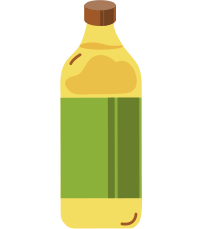

Sriracha-Sause
후이퐁 푸드의 스리라차는 타바스코 소스와 더불어 미국의 대표적인 핫소스이자 칠리 소스이다. 시라차라는 이름의 유래는 태국 타이 동부의 해안 도시 시라차에서 유래했습니다.
베트남 전쟁
1955년~1975년까지 베트남 민주공화국(북베트남)과 베트남 공화국(남베트남)과의 사이에서 일어난 전쟁입니다. 제2차 인도차이나 전쟁으로 불리기도 합니다.
Boat people
1955년~1975년까지 베트남 민주공화국(북베트남)과 베트남 공화국(남베트남)과의 사이에서 일어난 전쟁입니다. 제2차 인도차이나 전쟁으로 불리기도 합니다.
미국의 인기소스
2000년대 초반부터 아시안 퓨전은 미국에서 다시 주류로 떠올랐고 대학생들 사이에서 컬트적인 인기를 끌며 미국을 대표하는 핫소스 중 하나로 자리잡았습니다.
19
45
19
75
19
79
19
80
20
00

창업자 그는 누구인가?
2000년대 초반부터 아시안 퓨전은 미국에서 다시 주류로 떠올랐고 대학생들 사이에서 컬트적인 인기를 끌며 미국을 대표하는 핫소스 중 하나로 자리잡았습니다.
중국-베트남 전쟁 (中越戰爭)
1979년 2월 17일 국경분쟁을 시작으로 일어난 중화인민공화국과 베트남 사이에 일어난 전쟁입니다. 제3차 인도차이나 전쟁이라고도 불리지만, 동원된 두 나라의 병력 규모에 비해 1개월이라는 짧은 기간에 종료되었습니다.
보스턴으로
베트남 전쟁이 끝나고 공산주의가 된 인도차이나 반도 국가들에서 뱃길로 탈출한 사람들 즉, 배에 탄 난민을 일컫는 말입니다. 나라가 무너지면 민중의 운명이 어떻게 되는지를 보여주는 대표적인 예시 입니다.
SRIRACHA
Recipe
생각보다 손이 많이 가는 스리라차 레시피,
만들지 말고 사서 드세요!
설탕, 소금
할리피뇨
마늘
식초
식초를 제외한 재료들을 믹서기에 넣고 곱게 간다.
용기에 담아 랩을 씌운 채,
3~5일간 발효시킨다.
발효되는 동안 하루에
한 번씩 깊게 휘젓는다.
발효된 재료에 식초를 넣고 믹서기로 곱게 간다.
간 재료를 채로 거르고 수저로
짜내듯이 누른다.
빠져나온 즙을 끓여 농도를 맞추고
거품을 걷어낸다.
스리라차,
진실 혹은 거짓
스리라차는 (허쉬와 추파춥스 보다) 당이 낮습니다.
스리라차에는 (생각보다) 많은 정성이
들어가며 맵습니다.
0kcal 소스의 비밀?!
(1회 제공량) 5g = 5kcal 미만
표기법상 0kcal 표기 가능
낮은 칼로리에 비해 자극적인 맛으로 인해 닭가슴살, 두부, 양배추 등 다소 밋밋한 맛의
음식들과 함께 먹는 다이어터들이 많다고 한다.
BUT!
과다섭취 다이어터
위가 약하신 분
장이 안좋으신 분
스리라차에는 나트륨이 1티스푼당 75mg의 잔탄검, 소브산칼륨, 산성아황산나트륨 등이
들어가기 때문에 나트륨 과다섭취가 될 수 있으며,
산성아황산나트륨은 보존료 역할을 하지만 소화기관을 자극할 수 있기 때문에
장이나 위가 안좋으신 분들은 드시지 않거나 적당히 드시는 것을 권장합니다.